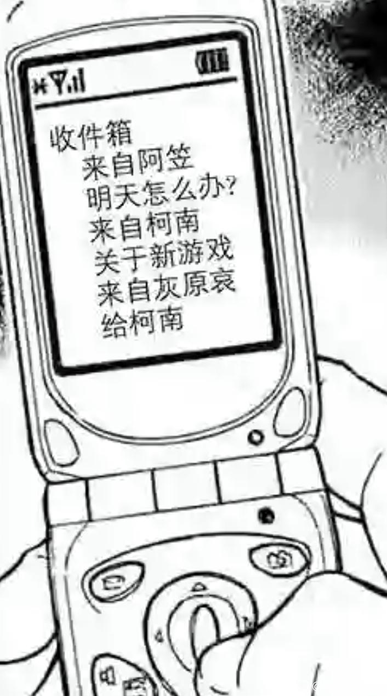
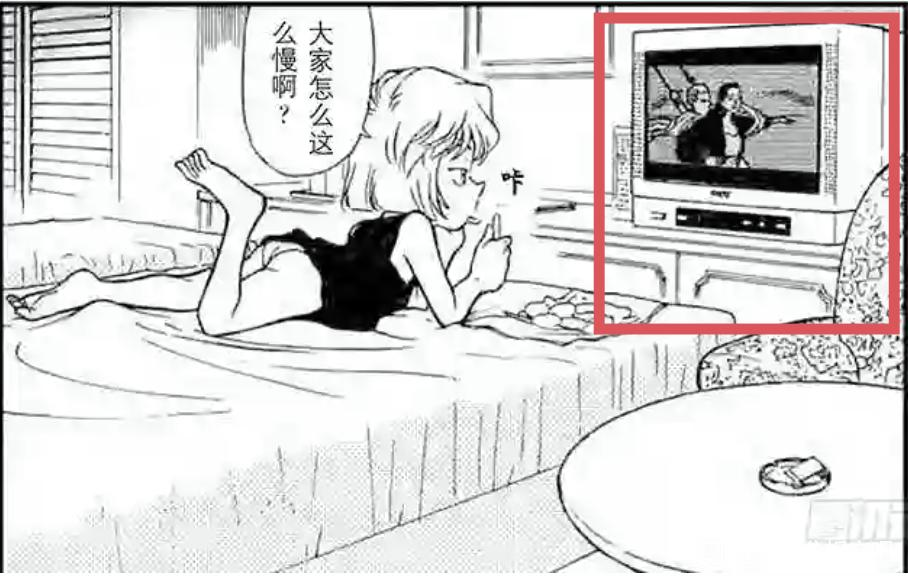
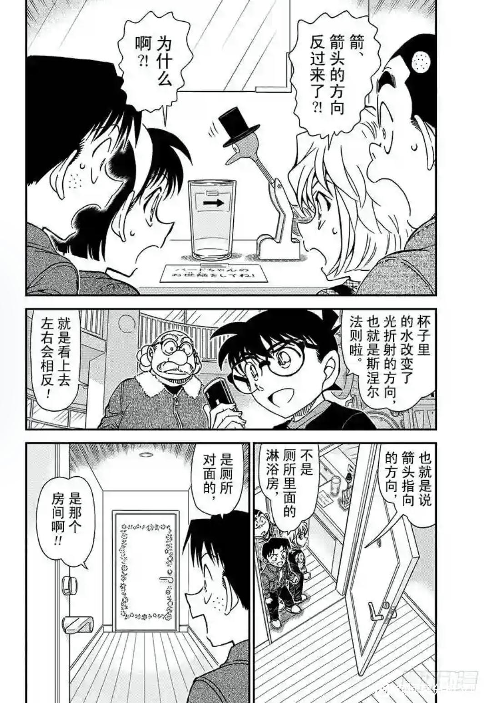

作为揭秘boss身份的篇章，这篇可没有看上去那么简单哦
除了初登场，东尾玛利亚参与的所有案件均为主线，而且她还是第53卷钥匙孔的角色，重要性不言而喻。那么先介绍一下她的原型吧，其实玛利亚这个名字并不是来源圣母玛利亚，而是抹大拉的玛丽亚，她不仅是救世主耶稣的忠实门徒，而且一些人认为她是耶稣的妻子。
玛利亚初登场时拿着的是数字4，而这正是代表着灰原的数字。
工藤新一是日本警察的救世主，抹大拉的玛丽亚是救世主之妻。
结合这些可以推测出玛利亚是灰原的“替身”，玛利亚的行为预测着发生在灰原身上的故事。
工藤新一是日本警察的救世主，抹大拉的玛丽亚是救世主之妻。
结合这些可以推测出玛利亚是灰原的“替身”，玛利亚的行为预测着发生在灰原身上的故事。
2024-05-09 05:08 | -Juliet:新玛可能性微存2024-05-09 05:38 | EdwardClow:回复 -Juliet :2024-05-09 10:25 | QuantumEntangl:玛利亚也戴眼镜2024-05-27 10:58 | EdwardClow:回复 QuantumEntangl :是呀

现在开始解读寻找玛利亚篇，本篇通过物品的正确摆放来形成箭头，这样才能找到玛利亚。其中箭头指向的是下一个房间，物品是形成箭头的关键。
第①个暗号：女孩子的仪容仪表最重要。这个暗号的解密钥匙是[梳妆镜]。前文提到了玛利亚是灰原的“替身”、“影子”，那么灰原有什么和梳妆镜相关的情节吗？
在第89卷柯南调查羽田浩司案时，灰原便提到她的母亲宫野艾莲娜也有一面镜子。在第42卷的寻找艾莲娜录音带这一篇中，艾莲娜在录音带中对灰原留言：[志保，你是不是已经变成一个好孩子了？妈妈的初恋是…]，很明显，这两句话并不是连续说的，中间还有青山设置的留白，结合艾莲娜谈论的情感话题，可以大胆推测出录音带的原台词是[志保，你是不是已经变成一个好孩子了？你现在有喜欢的人吗？女孩子要用镜子来检查自己的仪容仪表哦，妈妈的初恋是…]。
也就是说，寻找玛利亚篇的第①个暗号是指向灰原对柯南的情感。
第①个暗号：女孩子的仪容仪表最重要。这个暗号的解密钥匙是[梳妆镜]。前文提到了玛利亚是灰原的“替身”、“影子”，那么灰原有什么和梳妆镜相关的情节吗？
在第89卷柯南调查羽田浩司案时，灰原便提到她的母亲宫野艾莲娜也有一面镜子。在第42卷的寻找艾莲娜录音带这一篇中，艾莲娜在录音带中对灰原留言：[志保，你是不是已经变成一个好孩子了？妈妈的初恋是…]，很明显，这两句话并不是连续说的，中间还有青山设置的留白，结合艾莲娜谈论的情感话题，可以大胆推测出录音带的原台词是[志保，你是不是已经变成一个好孩子了？你现在有喜欢的人吗？女孩子要用镜子来检查自己的仪容仪表哦，妈妈的初恋是…]。
也就是说，寻找玛利亚篇的第①个暗号是指向灰原对柯南的情感。
2024-05-09 10:35 | QuantumEntangl:回复 EdwardClow :完了，我狠想知道艾莲娜的初恋是谁咋办2024-05-09 22:20 | 奥斯丁格理芬:回复 QuantumEntangl :应该不是指人是时间。2024-05-10 08:00 | EdwardClow:回复 QuantumEntangl :后续应该会揭晓录音带中的内容2024-07-01 04:29 | 末寒▫:灰原接过耳机后，听到的是“そろそろ好きな子できましたか？” 也就是艾琳娜问她是不是应该已经有喜欢的人了。然后下一句接着说“妈妈的初恋是…”。也是符合语言逻辑的。2024-07-01 04:32 | EdwardClow:回复 末寒▫ :那我推测对了2024-07-01 04:38 | 末寒▫:艾莲娜的确问灰原是不是有喜欢的人了？应该是国内翻译将艾莲娜的话错译了
回复 EdwardClow :给楼主点赞
好耶 又有分析文可以看了
又有分析文可以看了
又有分析文可以看了顶，等晚上看
好好好
第②个暗号：漫画书构成的箭头。
其中构成箭头的漫画卷数为14~17卷、44~47卷、71~72卷。
漫画这个元素无需多言，暗示的正是本作《名侦探柯南》。青山通过这种方式让我们关注这些卷数。接下来让我们看看这些卷数中都有哪些意味深长的案件。
其中构成箭头的漫画卷数为14~17卷、44~47卷、71~72卷。
漫画这个元素无需多言，暗示的正是本作《名侦探柯南》。青山通过这种方式让我们关注这些卷数。接下来让我们看看这些卷数中都有哪些意味深长的案件。
cy，快更
等更新，楼主加油
第14卷：走投无路的名侦探事件，小兰对柯南的身份进行质问。
第15卷：滑雪别墅事件，小兰首次在柯南的帮助下破案，指出凶手是自己的小学老师，青山画外音给出了这话小兰的定位：[温柔侦探]。这也表明了这时的小兰是有一定推理能力的，为之后小兰再次质问柯南＝新一埋下伏笔。
第15卷：滑雪别墅事件，小兰首次在柯南的帮助下破案，指出凶手是自己的小学老师，青山画外音给出了这话小兰的定位：[温柔侦探]。这也表明了这时的小兰是有一定推理能力的，为之后小兰再次质问柯南＝新一埋下伏笔。
2024-05-09 22:49 | 重来的记忆9:突发奇想，如果把小兰塑造成通过与犯人共情，破解动机，看破诡计，最后一边流泪一边完成推理的“温柔侦探”也挺有趣的（至少没见过这样的侦探角色）。2024-05-10 07:57 | EdwardClow:回复 重来的记忆9 :那样兰神的角色塑造就不会这么逆天了2024-07-26 08:02 | Aslaºº:回复 重来的记忆9 :那就真是兰神了
第16卷：柯南VS基德的漆黑之星篇，兰在大街上遇到快斗，将他误认为新一，柯南说认错人了，兰的“……”代表她仍未对柯南＝新一这个事情打消疑虑。

第17卷：有氧潜水事件，青山借毛利小五郎之口说出：青梅竹马只是暗自啜泣的甜蜜称呼。另外，本案有一个长相和发型酷似新一的女生，她之所以喜欢上对方是因为她身旁没多少男孩子。而我们的主角新一从小身边也没有多少女孩子然后喜欢上了兰。这真的是巧合吗？也许是青山有意为之。
2024-05-09 10:35 | Orange毛儿七:无论是新一还是柯南，在情感这方面，确实更加贴近于传统女方的“温柔执行细腻”。算是73老师的个人特色吧。2024-05-10 07:59 | EdwardClow:回复 Orange毛儿七 :青山在情感方面的刻画水平不俗2024-05-20 15:21 | 贴吧用户_aNC85EK:你不说我差点以为这是性转新了omg2024-05-20 23:50 | EdwardClow:回复 贴吧用户_aNC85EK :哈哈哈
第17卷：盗贼团谜之洋馆事件，本篇的重点是O在日语中与“王”读音相同，0与O在暗号中可以互相替换。还记得伦敦篇所说的0 is start吗，这里的0同样替换为“王”，也就是king，也就是柯南（国王代表柯南的详情请见4月发的帖子[黄昏之馆案对大结局的暗示]，这里不再赘述），结合南英的茶室在b站发的伦敦篇视频，0 is start还可以延伸为king is to shiho，柯南是志保的。
cy
cy
第44卷：帝丹高中学校怪谈事件，柯南想到自己变小之前每天和同学们说着无聊的话题，过着普通的高中生活。但这真的是柯南想要的吗？他可是平成年代的福尔摩斯啊！他最热爱的是推理，解谜，探险…变小后柯南会与少年侦探团一起进行侦探之旅，以小孩子的身份去破案，现在的他才更像福尔摩斯。
东尾玛利亚这个如同幼年版的桃井惠子的模样，不太可能是无关紧要的角色
2024-05-10 07:58 | EdwardClow:是的2024-05-10 09:21 | 小猫澈:搜了一下才知道是青子的好朋友呀2024-05-10 21:02 | 贴吧用户_7PX2yAy:真的，后来看到魔快青子差点认出快斗那一章，发觉青子的好友（和快斗也是熟人好像）和玛利亚相像2024-05-19 21:06 | 贴吧用户_GMSD67V:回复 EdwardClow :黑青，快青，基青都可以完成ka的统一（3K或者说K3）Kuroba，kaito，Kid。 同样的ca也有两版一是Conan和Ayumi, 二是CA Conan和 Ai。 步美会叫自己Ayumi，青子会叫自己Aoto 青子，步美。全是圆眼＋邻家小美女。都不是柯喜欢的那款。
是的。工藤新一的校园生活，并不能满足他对侦探事业的热爱。和同学打闹，暗恋一个同校的女生，和她在一起。
这一切都与侦探的生活相差甚远，工藤新一的心是寂寞的，爱好像一只贪吃的蛇得不到满足，当他来到江户川这个身份后，每天都能享受到推理带来的乐趣，他真的舍得抛弃现在所拥有的一切，回到那个无以自遣，百无聊赖的普通高中校园生活吗？
我的答案是，不愿意的。
在这么多话的相处之中，我们可以知道工藤新一心里，推理出真相大于一切。工藤新一将是江户川柯南的过去。
这一切都与侦探的生活相差甚远，工藤新一的心是寂寞的，爱好像一只贪吃的蛇得不到满足，当他来到江户川这个身份后，每天都能享受到推理带来的乐趣，他真的舍得抛弃现在所拥有的一切，回到那个无以自遣，百无聊赖的普通高中校园生活吗？
我的答案是，不愿意的。
在这么多话的相处之中，我们可以知道工藤新一心里，推理出真相大于一切。工藤新一将是江户川柯南的过去。
2024-05-10 07:58 | EdwardClow:说的很对
第45卷：星星与香烟的暗号篇，4话的标题皆与星星有关。但标题并不是事件中的台词，也没对事件起作用，本篇的推理线索是根据香烟摆放的数量推理犯人的名字，所以[星星与香烟的暗号]中的“星星的暗号”是为读者设下的，暗号答案指向shiho（志保）。
第466话[比星星更秘密]：开篇是柯南在思索组织的事情，所以这话标题暗指组织的内幕比灰原更加隐秘。
第467话[看见星星了吗]：青山通过标题来问读者，大家解开星星的含义了吗？
第468话[向星星许愿]：柯南向灰原许愿，拜托她假装肚子疼，借此举破案。
第469话[星星知道一切]：结尾柯南得到了boss邮件地址可能在鸟取的线索，此时漫画中给了灰原望着柯南的特写，暗示灰原知道boss的身份和邮件地址。
第466话[比星星更秘密]：开篇是柯南在思索组织的事情，所以这话标题暗指组织的内幕比灰原更加隐秘。
第467话[看见星星了吗]：青山通过标题来问读者，大家解开星星的含义了吗？
第468话[向星星许愿]：柯南向灰原许愿，拜托她假装肚子疼，借此举破案。
第469话[星星知道一切]：结尾柯南得到了boss邮件地址可能在鸟取的线索，此时漫画中给了灰原望着柯南的特写，暗示灰原知道boss的身份和邮件地址。
2024-05-09 21:13 | 世界上没有真理:星星符號暗示在名柯多次出現，我甚至懷疑如果有新志初遇劇情，志保可能化名星星，畢竟她們兩姐妹要躲組織對外的身份不可能用真名，志保倒過來星星還蠻有可能的
第46~47卷：心存疑惑的小兰篇，兰再一次怀疑柯南等于新一，但成功地被柯南骗过去了，兰此时不再怀疑柯南和新一是同一个人。柯南说他手机里有喜欢的女孩子发来的邮件，青山给了邮件一个特写，邮件中只有阿笠博士和灰原哀。

梳理剧情后，再来看寻找玛利亚篇的漫画书箭头，14卷是小兰怀疑柯南＝新一
47卷小兰不再怀疑柯南＝新一
71~72卷是伦敦篇
呈现在灰原面前的箭头居然是新一对兰的表白！？
不过箭头指向的只是下一处房间，而不是目的地。
新兰只是推理之路的一个过程而已，并不是结局。
47卷小兰不再怀疑柯南＝新一
71~72卷是伦敦篇
呈现在灰原面前的箭头居然是新一对兰的表白！？
不过箭头指向的只是下一处房间，而不是目的地。
新兰只是推理之路的一个过程而已，并不是结局。
2024-07-01 05:41 | 世界上没有真理:看書架真的有四排，每一排30本的話，那麼120卷完結可能性真的很大2024-07-01 05:44 | EdwardClow:回复 世界上没有真理 :是的，我猜这是青山给大家画的小彩蛋
cy
第③个暗号：这里形成箭头的关键道具是[张开双臂的洋娃娃]、[船]，是不是和泰克尼克号里张开双臂的Rose很像呢？在网中谜案件（2000年发行的第31卷）中灰原看的电影正是泰坦尼克号，也就是说青山早就有意将灰原与泰克尼克号联系起来，二十多年后，青山在M26中实现了他当年的想法。


cy速更
很合理
cy
cy等更楼主太仔细了
楼主太仔细了推愛德華大大的分析，大大分析是從哀的感情線入手，不過我看到之前有吧友發了一篇尋找瑪莉亞篇的分析是從新一入手感覺也很合理，寻找玛利亚是青山对新一感情线的一次总结... 大大可以看一下~
2024-05-10 00:50 | EdwardClow:殊途同归，不同的视角得到相同的结果。寻找玛利亚篇，步美回忆起玛利亚对她说让柯南一起来寻宝，偏偏这时柯南上热搜只能待在博士家，由灰原带队寻找玛利亚，柯南在此案中只参与了饮水鸟的暗号，前三个暗号柯南没有参与。
第④个暗号：别忘了照顾小bird哦
这里解谜的重要道具是[水]、[饮水鸟]。
向大家介绍一下饮水鸟，这是我国古代的玩具，曾经让爱因斯坦十分震惊。
灰原说喜欢看《爱因斯坦光荣与苦恼的日子》，这是青山原创的作品，灰原说她好像在哪里见过饮水鸟，很有可能是在这部纪录片里看过爱因斯坦介绍曾让自己大吃一惊的玩具，但现在灰原忘记这段纪录片剧情了。
灰原这段缺失的记忆是青山为了引出柯南帮助解谜的妙笔。
这里解谜的重要道具是[水]、[饮水鸟]。
向大家介绍一下饮水鸟，这是我国古代的玩具，曾经让爱因斯坦十分震惊。
灰原说喜欢看《爱因斯坦光荣与苦恼的日子》，这是青山原创的作品，灰原说她好像在哪里见过饮水鸟，很有可能是在这部纪录片里看过爱因斯坦介绍曾让自己大吃一惊的玩具，但现在灰原忘记这段纪录片剧情了。
灰原这段缺失的记忆是青山为了引出柯南帮助解谜的妙笔。
暗号写的是bird，而没有直接写[鸟]，这是青山玩的英文单词游戏，bird这个单词还有[少女]的意思。这个小把戏和伦敦篇的获胜者Miss Glass表面指草地女王，实际上暗示获胜者为眼镜小姐有异曲同工之妙。
前三个暗号是由灰原独立推理，但这个暗号灰原因忘记饮水鸟而选择求助柯南，也就是说从第④个暗号开始柯哀才登上舞台。[别忘了照顾小bird]就是指M26柯南在水下别忘了照顾灰原。
反转的箭头指向了饮水鸟，指向了bird，指向了[少女]，指向了[灰原]。
前三个暗号是由灰原独立推理，但这个暗号灰原因忘记饮水鸟而选择求助柯南，也就是说从第④个暗号开始柯哀才登上舞台。[别忘了照顾小bird]就是指M26柯南在水下别忘了照顾灰原。
反转的箭头指向了饮水鸟，指向了bird，指向了[少女]，指向了[灰原]。
 赞
赞在解开箭头的暗号后，灰原等人来到花边之门前，
寻找玛利亚篇的光彦提到了月亮星星与太阳的秘密，说玛利亚家的暗号和那个很像，果不其然，博士在月亮星星与太阳的秘密中就说过信封上的图形好像花边一样。
这个花边之门青山给了好几处特写，上面各种花的图案无论在哪个分镜中都是一致的，所以这个花边并不是青山随便画的，而是给读者的暗号。
花边之门上的图案同样需要转换为平假名才能发现真正的讯息。
寻找玛利亚篇的光彦提到了月亮星星与太阳的秘密，说玛利亚家的暗号和那个很像，果不其然，博士在月亮星星与太阳的秘密中就说过信封上的图形好像花边一样。
这个花边之门青山给了好几处特写，上面各种花的图案无论在哪个分镜中都是一致的，所以这个花边并不是青山随便画的，而是给读者的暗号。
花边之门上的图案同样需要转换为平假名才能发现真正的讯息。

2024-05-10 12:06 | 世界上没有真理:這花邊之門暗號要如何解呢？2024-05-11 05:50 | EdwardClow:回复 世界上没有真理 :门下半部分的花的图案被少年侦探团挡住了，所以没办法全部解读出来
青山多次在访谈中提到名柯中最难的暗号就是月亮星星与太阳的秘密。先来带大家回顾一下暗号的解答方式。
信用平假名书写表示暗号都是平假名。黑色太阳仅有一个，可推断出是五十音图中唯一不属于任何段或行的「ん」；白色太阳、白色六角星、白色月亮、黑色六角星、黑色月亮分别代表「あいうえお」五段，并且逐行变化的规则相同——太阳和六角星周围的尖角从上方开始顺时针依次减少一个，月亮也按顺时针方向出现缺损变化；图形右上角的空心圈和黑点分别代表半浊音「゜」和浊音「゛」，右下角的黑点则是因图形不够用而加上去的标记。
信用平假名书写表示暗号都是平假名。黑色太阳仅有一个，可推断出是五十音图中唯一不属于任何段或行的「ん」；白色太阳、白色六角星、白色月亮、黑色六角星、黑色月亮分别代表「あいうえお」五段，并且逐行变化的规则相同——太阳和六角星周围的尖角从上方开始顺时针依次减少一个，月亮也按顺时针方向出现缺损变化；图形右上角的空心圈和黑点分别代表半浊音「゜」和浊音「゛」，右下角的黑点则是因图形不够用而加上去的标记。
2024-05-11 06:27 | 世界上没有真理:感覺很難......這樣的話瑪莉亞篇的花邊之門下半部又被擋住了，好難解2024-05-11 06:32 | EdwardClow:回复 世界上没有真理 :是啊，青山钦定的最难暗号，只能看后续剧情有没有线索了，不过按青山的更新速度，可能需要很久了2024-05-11 09:36 | 世界上没有真理:回复 EdwardClow :真的難，不知道是否是花朵的變化還是根莖葉?重點是圖形不全，遠景模糊，近景又被擋住2024-05-11 11:14 | EdwardClow:回复 世界上没有真理 :图形全貌都未必能完美解开，更别说图形不全了

花边之门之所以难以打开，是因为房间内部温度高，气压压住内侧，这明显是初中生的物理知识，而面对这个情况灰原的反应是问柯南接下来怎么办？要知道漫画的前一格就是柯哀二人挂断电话，明明青山可以不画这个分镜，让柯南直接说打开门的方法，但青山偏偏画出柯哀就在上一格漫画挂断电话，漫画无闲笔，这样做的用意就是引出柯南说的这扇门只有【大人】才能打开。看来在经历前面饮水鸟暗号中柯对哀的箭头后，在结局前柯哀二人会再次变大。
cy
赶上直播了
cy
cy
cy
速度更新
众人合力终于打开了花边之门，找到了玛利亚。桌子上的4个遥控器十分醒目，这个房间只有一台电视，电视有着再多的功能也不需要这么多的遥控器吧，所以数字【4】是青山给读者的再一次暗示。青山怕大家忘记玛利亚初登场拿着的4号，在多年后的1008话再次暗示玛利亚和4号有着密切的关联，也就是前文提到的玛利亚的角色作用是充当灰原故事线的缩影。
2024-05-20 21:04 | 世界上没有真理:房間裡的玩偶也有熊貓跟兔子2024-05-20 21:13 | EdwardClow:回复 世界上没有真理 :是的
映入灰原眼帘的不仅仅是玛利亚，还有熊猫，也就是黑白君，也就是柯南。
这里为大家推荐一下九九玉生烟大佬在2月发的黑白君的帖子，看完那个帖子之后，再来看寻找玛利亚篇的这一幕，你会感叹灰原历经千辛万苦，终于在结局时和柯南完成故事线上的收束。
这里为大家推荐一下九九玉生烟大佬在2月发的黑白君的帖子，看完那个帖子之后，再来看寻找玛利亚篇的这一幕，你会感叹灰原历经千辛万苦，终于在结局时和柯南完成故事线上的收束。
寻找玛利亚篇提到了充满回忆的录像带，千叶和苗子那章也提到了这一元素。苗子认出了当年的千叶，千叶却没能认出苗子，结合吧里的初遇论，我大胆预测其实灰原早就认出了柯南就是当年和她初遇的那个男孩，柯南和后知后觉的千叶一样至今没认出灰原。
寻找玛利亚篇这一幕再次指向伦敦篇所在的第71卷，苗子认出来了当年的千叶，千叶没认出苗子。结合吧里的初遇论，我预测灰原早已认出柯南是当年和她初遇的那个男孩，但柯南和后知后觉的千叶一样至今没认出灰原。

原先看过本吧某个大神的分析帖，有个观点非常牛，我至今记忆深刻。
寻找玛利亚这个篇章，如果你再仔细看，就会发现，其实根本不需要推理。东尾玛利亚的家整个房间布局都在一个平面上，而且就那几间房，一间一间找其实就能找到玛利亚。而一旦你明白了这一点，再回头看所有的推理，都在强调箭头，各种箭头，翻转箭头，额，是不是有点意思了，你知道我说的是什么意思，我知道你知道我说的是什么意思。
寻找玛利亚这个篇章，如果你再仔细看，就会发现，其实根本不需要推理。东尾玛利亚的家整个房间布局都在一个平面上，而且就那几间房，一间一间找其实就能找到玛利亚。而一旦你明白了这一点，再回头看所有的推理，都在强调箭头，各种箭头，翻转箭头，额，是不是有点意思了，你知道我说的是什么意思，我知道你知道我说的是什么意思。
总结：
第①个箭头指向灰原对柯南的情感
第②个箭头灰原得知新对兰表白
第③个箭头暗示M26双鲨共舞
第④个箭头指向柯南对灰原的情感
大结局前：新志变大
大结局：柯哀完成故事线的收束，柯南想起了和灰原在13年前的初遇，那段回忆是柯哀二人共同的宝藏。
第①个箭头指向灰原对柯南的情感
第②个箭头灰原得知新对兰表白
第③个箭头暗示M26双鲨共舞
第④个箭头指向柯南对灰原的情感
大结局前：新志变大
大结局：柯哀完成故事线的收束，柯南想起了和灰原在13年前的初遇，那段回忆是柯哀二人共同的宝藏。
新志一出来，也是名柯完结之时了
答主好牛
寻找玛利亚这篇看似只是柯南在修学旅行时暴露了自己的身份，小哀则是带队跟三小只找玛利亚，其实真的埋了好多暗示，而且在玛利亚篇的最后，工藤优作说了一句非常重要的话：“清水寺的事情就当没发生过”在网上发布说看到新一的那个网友后来也发布说其实她在清水寺并没有见到工藤新一，是自己产生了幻觉（我们当然知道是工藤夫妇封口了）小兰听到这条信息以后还确认了一遍短信“才不是幻觉呢”！
2024-05-21 18:16 | EdwardClow:柯南暴露身份这么危急的情况，青山却安排灰原和少年侦探团去找玛利亚，看似不合情理，实际上是想通过寻找玛利亚案暗示读者接下来的故事走向。
帮顶
厉害
瑪利亞可能是吃了APTX的艾蓮娜？
2024-05-22 20:32 | EdwardClow:艾莲娜已多次被实锤在火灾中丧生
这里说的装满三个人回忆的房间具体指哪三个人？
2024-06-04 03:17 | 双鱼Sandysweet:玛利亚、玛利亚的爷爷和奶奶2024-08-04 14:38 | 天平的路口:新志初遇明美应该也在场，这三个人也指的柯哀明美三人

第1111话的灰原花坛纵火案并不只是致敬波西米亚丑闻那么简单，漫画标题是【零落的真相】，封面写着“与重要人物结缘的一块拼图”，也就是说该案是解开某个案件谜题的线索之一，结缘指的是若哀二人。前文提到了东尾玛丽亚是灰原的缩影（这个写作手法类似于晴为黛影），那么这个二人结缘系列就应该影射17年前的宫野夫妇实验室火灾案，青山真正意图是想告诉读者若狭和宫野夫妇实验室火灾案有着密不可分的关系。
86卷亲切的阿姨系列，首次揭晓朗姆是组织的二号人物，本系列的盗贼团犯人正是朗姆传言中的三个形象，本系列的小男孩无父无母，但他认识了一位亲切的阿姨，但事实上这个阿姨是盗贼团的一员，他不但将小男孩的双亲逼上了绝路，还葬送了小男孩好不容易交到的朋友。
我反复提过青山的写作手法是用若干看似独立的案件推理来形成一个宏观的主线/恋爱推理。
如果这个篇章也是这种情况呢？
那我们会得到这样一个答案：盗贼团映射的是黑衣组织，三个犯人映射朗姆，亲切的阿姨映射若狭，无父无母的小男孩映射灰原。若狭本来加入了黑衣组织，但她间接害死了宫野夫妇，她出于愧疚照顾年幼的灰原，但13年前没有成功阻止琴酒带走灰原，导致灰原失去了好不容易交到的好朋友——工藤新一。
86卷亲切的阿姨系列，首次揭晓朗姆是组织的二号人物，本系列的盗贼团犯人正是朗姆传言中的三个形象，本系列的小男孩无父无母，但他认识了一位亲切的阿姨，但事实上这个阿姨是盗贼团的一员，他不但将小男孩的双亲逼上了绝路，还葬送了小男孩好不容易交到的朋友。
我反复提过青山的写作手法是用若干看似独立的案件推理来形成一个宏观的主线/恋爱推理。
如果这个篇章也是这种情况呢？
那我们会得到这样一个答案：盗贼团映射的是黑衣组织，三个犯人映射朗姆，亲切的阿姨映射若狭，无父无母的小男孩映射灰原。若狭本来加入了黑衣组织，但她间接害死了宫野夫妇，她出于愧疚照顾年幼的灰原，但13年前没有成功阻止琴酒带走灰原，导致灰原失去了好不容易交到的好朋友——工藤新一。
2024-07-06 03:12 | okfree匿名用户:赶上直播了！